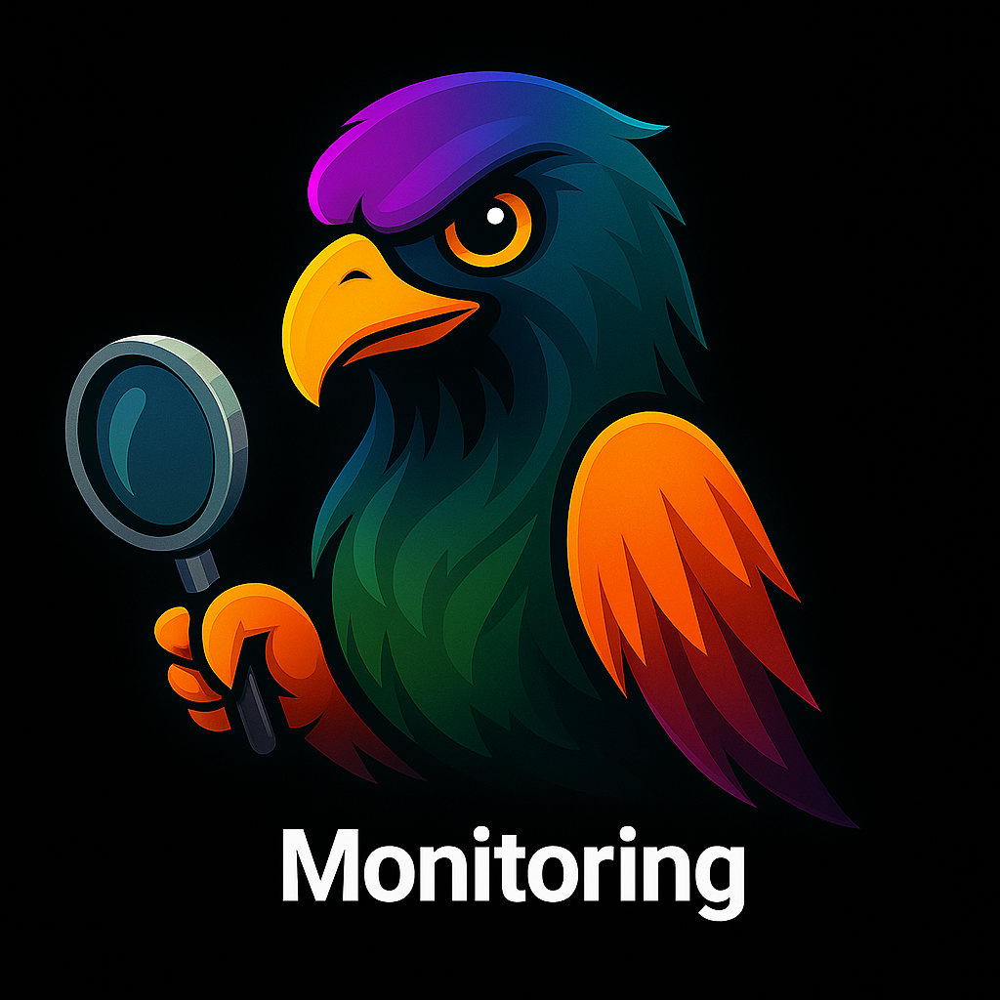
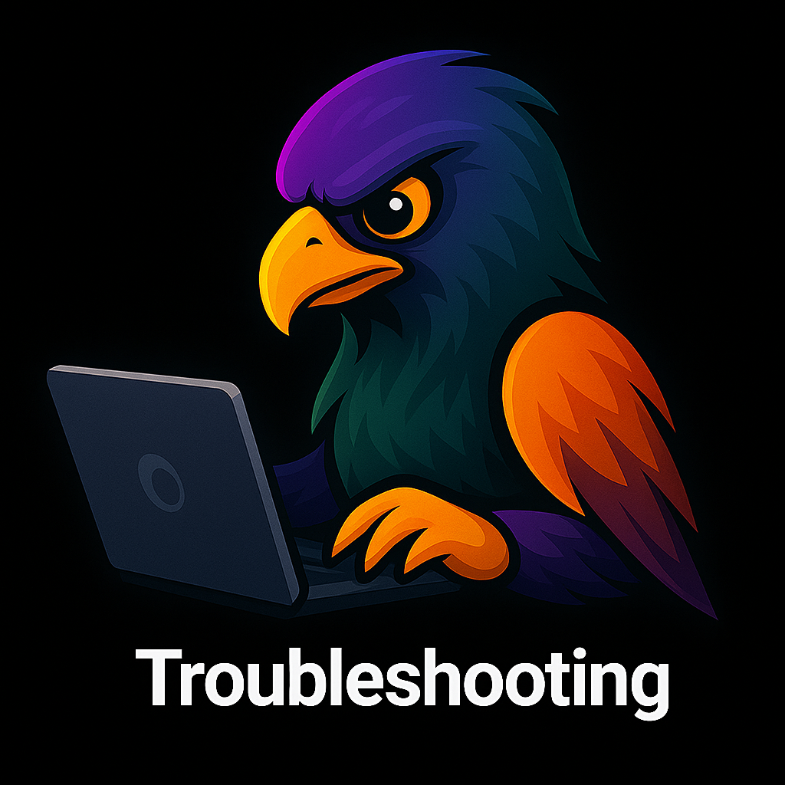
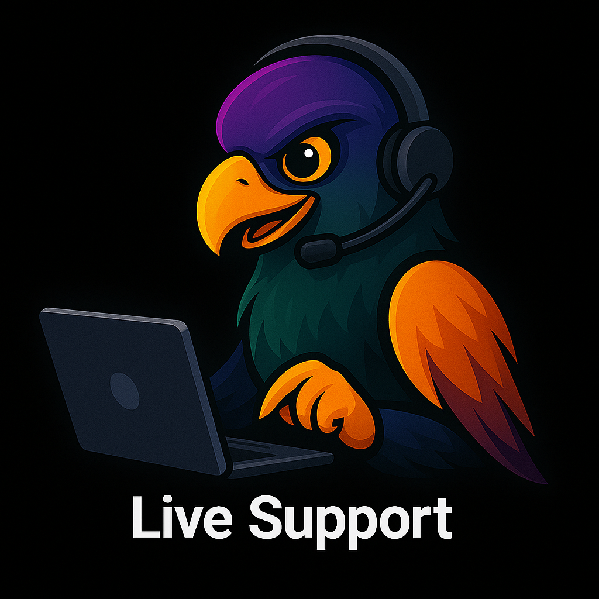

Spectral Elements
Explore the building blocks of Spectral's monitoring and observability solutions. From log management to live support, our eagle mascots guide you through every aspect of our service.
Our Mascots in Action

Monitoring
Vigilant, proactive, and always alert.

Troubleshooting
Solving issues before they become problems.

Live Support
Always here for you, 24/7.
Key Features
- Tool Audits: Comprehensive reviews of your monitoring stack.
- Custom Dashboards: Tailored for IT, DevOps, and Security teams.
- Alert Tuning: Reduce noise, focus on what matters.
- Performance Monitoring: Track errors, latency, and bottlenecks.
- Log Management: Centralized, actionable, and secure.
- Cost Optimization: Get more from your monitoring spend.
- Migration Support: Seamless transitions between tools.
- Training & Enablement: Empower your team to own observability.
Want to learn more? Contact Spectral today!